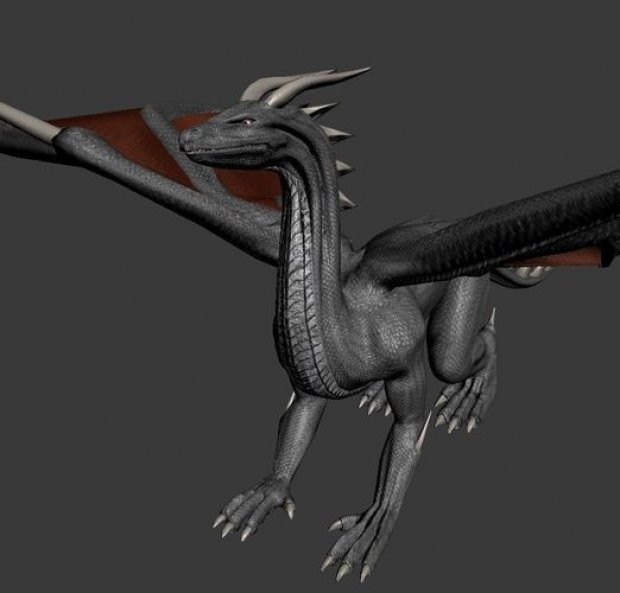
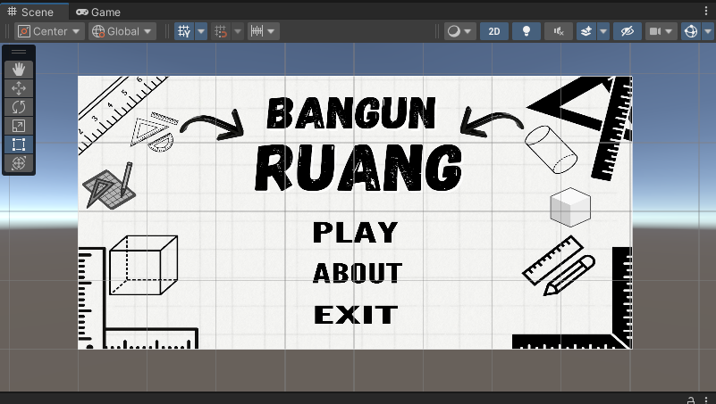

My Portofolio

Modelling Character
Membuat model karakter 3D menggunakan Blender dengan detail yang realistis. Proyek ini bertujuan untuk menampilkan keterampilan modeling 3D, seperti proporsi, tekstur, dan pencahayaan

Pengembangan Web
Mengembangkan situs web interaktif menggunakan HTML, CSS, dan JavaScript. Proyek ini fokus pada responsivitas, desain modern, dan pengalaman pengguna yang optimal.

Membuat Aplikasi
Merancang dan mengembangkan aplikasi dengan tampilan menu utama yang intuitif. Proyek ini menekankan user interface (UI) dan user experience (UX) yang sederhana namun efektif.